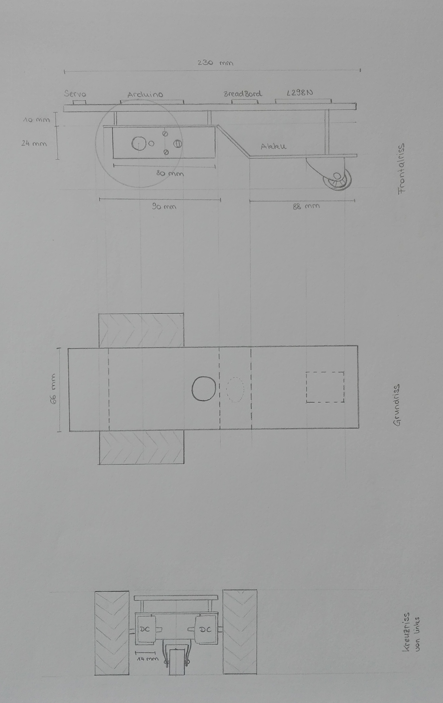

2 Planung
Die Planung erfolgte aufgrund der verfügbaren Bauteile:
- Arduino Uno
- Ultraschallsensor
- Servo
- 2 Farbsensoren
- 2 Abstandssensoren
- 2 DC-Motoren inklusive Rad
- Motorschutz
- Taster
2.1 Skizze des Autos
Die folgende Skizze beinhaltet eine maßstäbliche Grobplanung des Aufbaus des selbstfahrenden Autos. Momentan wird dabei nur die Planung eines Autos mit Servo und Ultraschallsensor behandelt und kein Line-Follower.

2.2 Schaltplan
Der momentane ersichtliche Schaltplan beinhaltet die Verkabelung für ein selbstfahrendes Auto mit Ultraschallsensor und Servo. Weiters wird hier ein Akku als Stromquelle angenommen.
Wichtig: Wenn ein Servo verwendet wird, verhindert dieser ein analogWrite(); auf Pin 9 und Pin 10. Jedoch kann das Servo sehr wohl an diesen Pins angeschlossen werden.